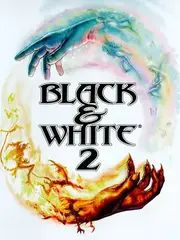

 |
|
| Tiempo de juego | 10m 12s |
| Última actividad | 16/1/2026 11:47:25 |
| Añadido | 20/11/2025 22:50:07 |
| Modificado | 20/11/2025 23:10:24 |
| Estado de finalización | Jugado |
| Librería | Playnite |
| Fuente | |
| Plataforma | PC (Windows) |
| Fecha de lanzamiento | 7/10/2005 |
| Puntuación de la Comunidad | 76 |
| Puntuación de la Crítica | 73 |
| Puntuación de usuario | |
| Género | Adventure Real Time Strategy (RTS) Role-playing (RPG) Simulator Strategy |
| Desarrollador | Lionhead Studios Robosoft Technologies |
| Editor | Electronic Arts Feral Interactive |
| Característica | Single Player |
| Enlaces | |
| Tag | |
Peter Molyneux (el creador de Fable) estaba completamente loco cuando hizo esto, y le salió una genialidad.
No hay nada igual a este juego. Literalmente nada. Sos una mano flotante gigante y tenés una Mascota sagrada (una Vaca, un León, un Lobo) que aprende de vos como si fuera un hijo. Si sos bueno, la mascota es un ángel; si sos malo, le crecen cuernos y piel roja.
La estrella del juego es tu Criatura. Elegís entre una Vaca, un León, un Mono o un Lobo, y lo crías desde chiquito. Y ojo, porque la Inteligencia Artificial es zarpada: el bicho aprende de vos. Si se come a un aldeano y vos le hacés cariñito, va a entender que comer gente está bien. Si le pegás un bife, va a entender que no. Ver cómo crece y cambia su personalidad según cómo lo trates es algo que no vas a ver en ningún otro lado.
La jugabilidad es una mezcla rara de estrategia y Tamagotchi gigante. Podés ganar siendo un Dios Bueno, construyendo ciudades hermosas con fuentes y templos para que los enemigos se mueran de envidia y se muden con vos. O podés ser un Dios Malo, armar ejércitos y tirar bolas de fuego y rayos para romper todo.
Todo se controla con gestos del mouse. Para tirar un milagro de agua, dibujás una "C" en el piso. Para tirar fuego, dibujás una espiral. Es súper inmersivo.
Esta versión completa trae la expansión "Battle of the Gods", que suma criaturas nuevas como el Tigre y te enfrenta a un dios Muerto Viviente. Es una locura total.